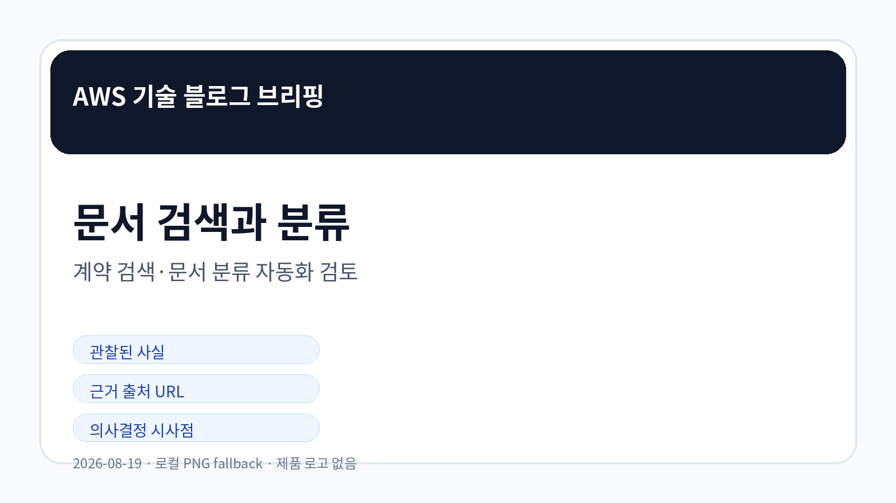
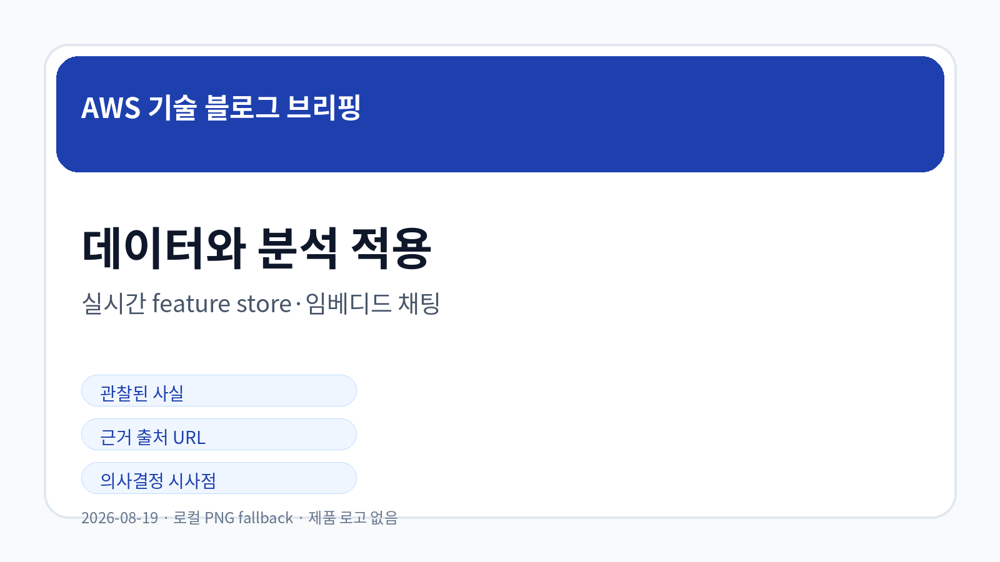
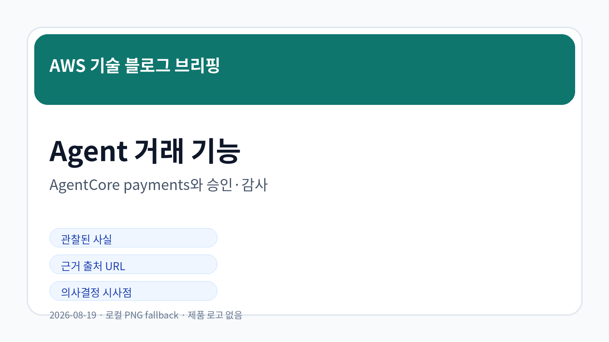

Amazon Bedrock AgentCore payments 정식 제공과 Agent 거래 기능 검토
Amazon Bedrock AgentCore payments가 Agent의 안전한 거래 처리를 지원하는 기능으로 확인되었습니다.
원문 확인AWS 공식 블로그 수집 · LLM Wiki 동기화
오늘 신규 저장·동기화된 5개 AWS 공식 블로그 글을 기준으로, 확인 가능한 사실과 의사결정 검토 포인트만 정리했습니다.

AWS 공식 RSS 3개에서 신규 문서 5건을 확인했습니다. 계약 검색, 실시간 feature store, 문서 분류, 임베디드 분석 채팅, Agent 거래 기능이 오늘의 주요 신호입니다.
계약 검색과 문서 분류 항목은 Bedrock 기반 지식 처리의 정확도와 설명 가능성을 검토해야 함을 보여줍니다.
실시간 feature store와 임베디드 채팅은 데이터 처리와 분석 경험을 업무 애플리케이션 안으로 가져오는 흐름을 보여줍니다.
AgentCore payments는 Agent가 거래 행위에 가까워질 때 승인·감사·한도 관리가 핵심 검토 항목임을 시사합니다.
가격, 리전, 세부 제약, 보안 책임 범위는 원문과 공식 문서 기준으로 추가 확인이 필요합니다.

Amazon Bedrock AgentCore payments가 Agent의 안전한 거래 처리를 지원하는 기능으로 확인되었습니다.
원문 확인Amazon Quick embedded chat을 애플리케이션에 맞게 구성하는 방식이 확인되었습니다.
원문 확인Jumio가 AWS에서 실시간 feature store를 구축한 사례가 확인되었습니다.
원문 확인Amazon Bedrock을 활용해 벡터 프롬프트 기반 문서 분류를 구현하는 방식이 확인되었습니다.
원문 확인Amazon Bedrock과 자동 생성 필터를 활용해 계약 검색 정확도를 높이는 접근이 확인되었습니다.
원문 확인| 기사 | 게시 | 카테고리 |
|---|---|---|
| Amazon Bedrock AgentCore payments 정식 제공과 Agent 거래 기능 검토 | 2026-08-19 | AI/ML |
| Amazon Quick embedded chat의 애플리케이션 내 맞춤 적용 | 2026-08-19 | Analytics |
| Jumio의 AWS 기반 실시간 feature store 구축 사례 | 2026-08-19 | Data/Analytics |
| Amazon Bedrock을 활용한 벡터 프롬프트 문서 분류 구현 | 2026-08-19 | AI/ML |
| Amazon Bedrock 기반 계약 검색 정확도 개선과 자동 필터 활용 | 2026-08-19 | AI/ML |
오늘 수집된 AWS 공식 블로그는 생성형 AI와 데이터 기능이 검색, 분류, 분석, 거래까지 확장될 때 정확도 평가, 권한 경계, 감사 가능성, 비용 관리가 함께 검토되어야 함을 보여줍니다.

계약·문서·피처 데이터는 접근 권한과 데이터 분류 기준이 명확해야 합니다.
검색·분류·거래형 Agent 기능은 사용량 기록과 비용 한도를 함께 설계해야 합니다.
규제 산업과 대기업 환경에서는 원문 기능의 유용성뿐 아니라 내부 보안 기준 적합성과 감사 가능성이 중요합니다.
자동화 기능은 결과 검증과 사용자 승인 체계가 부족하면 통제 리스크가 커질 수 있습니다.
관찰된 사실: Amazon Bedrock AgentCore payments가 Agent의 안전한 거래 처리를 지원하는 기능으로 확인되었습니다.
기업 의사결정 시사점/리스크/기회: 거래형 Agent는 지출 한도, 사용자 승인, 감사 추적, 실패 보상 절차를 원문 기준으로 검토해야 합니다.
관찰된 사실: Amazon Quick embedded chat을 애플리케이션에 맞게 구성하는 방식이 확인되었습니다.
기업 의사결정 시사점/리스크/기회: 임베디드 분석 채팅은 사용자 권한, 데이터 노출 범위, 감사 로그, UX 일관성을 함께 설계해야 합니다.
관찰된 사실: Jumio가 AWS에서 실시간 feature store를 구축한 사례가 확인되었습니다.
근거 출처 URL: https://aws.amazon.com/blogs/machine-learning/how-jumio-built-a-real-time-feature-store-on-aws/
기업 의사결정 시사점/리스크/기회: 실시간 feature store는 지연시간, 데이터 품질, 온라인·오프라인 피처 일관성, 모델 서빙 비용을 함께 검토해야 합니다.
관찰된 사실: Amazon Bedrock을 활용해 벡터 프롬프트 기반 문서 분류를 구현하는 방식이 확인되었습니다.
기업 의사결정 시사점/리스크/기회: 문서 분류 자동화는 분류 근거, 오분류 처리, 데이터 보존 정책, 재학습 기준을 명확히 해야 합니다.
관찰된 사실: Amazon Bedrock과 자동 생성 필터를 활용해 계약 검색 정확도를 높이는 접근이 확인되었습니다.
기업 의사결정 시사점/리스크/기회: 문서 검색 자동화는 정확도 평가, 검색 조건의 설명 가능성, 법무·계약 데이터 접근 권한을 함께 검토해야 합니다.
Image Prompt 1: AWS 공식 블로그 기반 한국어 기업 브리핑 비주얼. GPT Image 2 시도는 cron timeout으로 완료되지 않아 로컬 PNG fallback 사용. Image Prompt 2: AWS 공식 블로그 기반 한국어 기업 브리핑 비주얼. GPT Image 2 시도는 cron timeout으로 완료되지 않아 로컬 PNG fallback 사용. Image Prompt 3: AWS 공식 블로그 기반 한국어 기업 브리핑 비주얼. GPT Image 2 시도는 cron timeout으로 완료되지 않아 로컬 PNG fallback 사용.